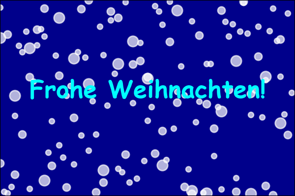

from matplotlib import pyplot as plt
import numpy as np
import random
from matplotlib.animation import FuncAnimation, PillowWriter
class App:
def __init__(self):
self.inch_x = 3
self.inch_y = 2
self.fig = plt.figure(figsize=(self.inch_x, self.inch_y))
self.ax = self.fig.add_subplot(facecolor='darkblue')
self.ax.set_xlim(0, 1)
self.ax.set_ylim(0, 1)
self.ax.set_position([0,0,1,1])
# Greeting
self.ax.text(x=0.5, y=0.5, s="Frohe Weihnachten!", fontsize=self.inch_x * 6, color='cyan', ha='center', fontname='Comic Sans MS', weight='bold')
# Greate Scatter
self.sc1 = self.create_marker(n=20, marker_size=self.inch_x*20)
self.sc2 = self.create_marker(n=40, marker_size=self.inch_x*10)
self.sc3 = self.create_marker(n=80, marker_size=self.inch_x*5)
self.anim = FuncAnimation(self.fig, self.animate, interval=50, frames=200)
# Save animation as a GIF
self.writer = PillowWriter(fps=30) # Adjust FPS as needed
self.anim.save('frohe.gif', writer=self.writer)
plt.show()
def create_marker(self, n, marker_size):
x = []
y = []
for i in range(n):
x.append(i * 1 / n)
y.append(random.random())
return self.ax.scatter(x, y, s=marker_size, color='white', alpha=0.7)
def animate(self, frame):
self.move(self.sc1, step=0.02)
self.move(self.sc2, step=0.01)
self.move(self.sc3, step=0.005)
def move(self, sc, step):
offsets = np.array(sc.get_offsets())
for i in range(len(offsets)):
x, y = offsets[i]
y = y - step
if y < 0:
y = y + 1.0
offsets[i] = [x, y]
sc.set_offsets(offsets)
App()